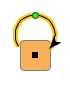
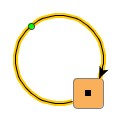
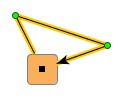

| Bringing Graph Elements to Life: The Realizer Concept | ||
|---|---|---|
| Prev | Chapter 6. Displaying and Editing Graphs | Next |
| Bringing Graph Elements to Life: The Realizer Concept | ||
|---|---|---|
| Prev | Chapter 6. Displaying and Editing Graphs | Next |
Graph elements are first and foremost structural elements. By themselves, they do not have a visual representation. Instead, the yFiles library utilizes so-called "realizers" to visualize the nodes and edges of a graph. Among other user interface aspects, a realizer defines the way a graph element is rendered. To this end, it has to be associated with, i.e., bound to, either node or edge, and thereafter it provides and manages all visual aspects of this graph element.
For either type of graph element there is a specialized realizer class
available: class NodeRealizer for nodes,
and class EdgeRealizer
for nodes,
and class EdgeRealizer for edges.
Figure 6.3, “Node and edge realizers” shows the class hierarchy for the realizer types.
Both classes are abstract and serve as a basis for actual implementations.
For most general cases there already exist a number of predefined node and edge
realizers.
for edges.
Figure 6.3, “Node and edge realizers” shows the class hierarchy for the realizer types.
Both classes are abstract and serve as a basis for actual implementations.
For most general cases there already exist a number of predefined node and edge
realizers.
The most convenient way to have realizers be bound to nodes and edges at creation time is to register so-called "default realizers" with a Graph2D object using the following methods. These realizers serve as factories for realizer creation by creating copies of themselves.
NodeRealizer getDefaultNodeRealizer() |
|
| Description | Support for default realizers in class Graph2D. |
Graph elements that are created using any of the following methods are then automatically bound to the respective realizer type, i.e., to the copy of a default realizer:
Node createNode() |
|
| Description | Node creation methods from class Graph2D that resort to default realizer binding. |
Edge createEdge(Node v, Node w) |
|
| Description | Edge creation methods from class Graph2D that resort to default realizer binding. |
Alternatively, realizers can be bound to already existing nodes and edges on a per-element basis using the following setter methods. In effect, these methods are the most powerful to associate realizers.
NodeRealizer getRealizer(Node v) |
|
| Description | Support for explicit realizers in class Graph2D. |
The default realizer binding at element creation time can also be circumvented using these methods:
Node createNode(NodeRealizer r) |
|
| Description | Node creation with explicit realizer binding. |
Edge createEdge(Node v, Node w, EdgeRealizer r) |
|
| Description | Edge creation with explicit realizer binding. |
Both node and edge realizers provide a number of common features that cover a variety of different aspects. The features include, e.g., support for multiple labels with a graph element, setting an element's graphical attributes, and handling its visibility and selection state. Other features, with a more technical focus, include, e.g., support for a special "less-detail" rendering mode and also for hit tests.
A realizer holds and manages an arbitrary number of labels. Its label support comprises methods to add or remove a label, to control a label's text, and to get the number of held labels. The realizers also provide factory methods to conveniently create the proper label type, i.e., either NodeLabel or EdgeLabel (see below). Furthermore, painting the labels lies in the responsibility of a realizer, too.
The label classes themselves are described in more detail in the section called “Label Support”. Among other things, the different positioning models for nodes and edges are explained there too.
NodeLabel createNodeLabel() |
|
| Description | Factory method of class NodeRealizer to create node labels. |
EdgeLabel createEdgeLabel() |
|
| Description | Factory method of class EdgeRealizer to create edge labels. |
Hit tests subsume a variety of related topics. These are:
Methods for hit-testing in the realizer types:
void calcUnionRect(Rectangle2D r) |
|
| Description | Hit-testing methods of class NodeRealizer. |
void calcUnionRect(Rectangle2D r) |
|
| Description | Hit-testing methods of class EdgeRealizer. |
Node realizers are responsible for graphically rendering nodes in a view.
Abstract class NodeRealizer provides the
basis for actual implementations.
Figure 6.4, “Node realizer hierarchy” shows the class hierarchy of the node realizer
implementations.
provides the
basis for actual implementations.
Figure 6.4, “Node realizer hierarchy” shows the class hierarchy of the node realizer
implementations.
Table 6.1, “Predefined node realizer implementations” lists all predefined node realizer implementations from package y.view.
Table 6.1. Predefined node realizer implementations
| Classname | Description |
|---|---|
| GenericNodeRealizer | A generic basis for convenient new-style customization of all aspects of node representation and behavior. Out of the box, this NodeRealizer provides only a simple default node representation. |
| ImageNodeRealizer | A node representation that can draw an image. |
| ShapeNodeRealizer | A node representation that can draw a variety of geometric shapes. |
In addition to the realizer implementations in package y.view, the
yFiles extension package ySVG,
which adds support for Scalable Vector Graphics (SVG), makes available class
SVGNodeRealizer .
This realizer implementation enables using SVG content for the visual
representation of nodes.
See the section called “Using SVG Content” for more information.
.
This realizer implementation enables using SVG content for the visual
representation of nodes.
See the section called “Using SVG Content” for more information.
Actual NodeRealizer implementations have to provide bodies for the following methods. These methods define the implementation's replication behavior, and how the node's visual representation is rendered. (Special considerations that have to be observed with realizer replication are described in Writing Customized Realizers.)
abstract NodeRealizer createCopy(NodeRealizer nr) |
|
| Description | Abstract methods from class NodeRealizer. |
The following methods are invoked to render the visual representation of a node. The default "less-detail" implementation provided by class NodeRealizer draws the node as a simple rectangle. Note that all predefined node realizers resort to this default implementation.
void paint(Graphics2D gfx) |
|
| Description | Rendering methods from class NodeRealizer. The latter method supports special less-detail rendering. |
Further control over less-detail rendering for the elements in a view can be achieved by using rendering hints.
Support for hit tests is offered by the following methods.
The default implementations of these methods take the bounding box of the node
as the basis for their calculations.
In contrast, note that method
contains from class ShapeNodeRealizer
performs shape-specific hit test computation.
Also, note that method
calcUnionRect
from class ShapeNodeRealizer
performs shape-specific hit test computation.
Also, note that method
calcUnionRect calculates the enclosing rectangle of the node together with all its labels.
Almost certainly, the result is larger than the bounding box of the node alone.
calculates the enclosing rectangle of the node together with all its labels.
Almost certainly, the result is larger than the bounding box of the node alone.
Class NodeRealizer supports specifying minimum size and maximum size
constraints for the visual representation of a node by means of interface
SizeConstraintProvider .
Both size constraints are obeyed when a node is resized interactively by a user,
i.e., when view mode class HotSpotMode handles
the node resizing mouse gesture.
The following method from class NodeRealizer is used by the view mode to retrieve
custom implementations:
.
Both size constraints are obeyed when a node is resized interactively by a user,
i.e., when view mode class HotSpotMode handles
the node resizing mouse gesture.
The following method from class NodeRealizer is used by the view mode to retrieve
custom implementations:
SizeConstraintProvider getSizeConstraintProvider() |
|
| Description | Size constraints getter method. |
Specifying a custom implementation differs depending on the actual realizer class that is used:
A NodeRealizer implementation where one of several possible geometric shapes is
used for the visual representation of an associated node.
Table 6.2, “Geometric shapes of class ShapeNodeRealizer” shows a list of all shape types together with their
type constants as defined in class
ShapeNodeRealizer .
.
Note that some of the geometric shapes behave differently, e.g.:
Table 6.2. Geometric shapes of class ShapeNodeRealizer
| Constant Name | Shape |
|---|---|
| ELLIPSE |
 |
| RECT |
 |
| TRIANGLE |
 |
| PARALLELOGRAM |
 |
| HEXAGON |
 |
| DIAMOND |
 |
| OCTAGON |
 |
| ROUND_RECT |
 |
| RECT_3D |
 |
| TRAPEZOID |
 |
| TRAPEZOID_2 |
 |
The shape type can be controlled using these methods:
byte getShapeType() |
|
| Description | Shape-related methods from class ShapeNodeRealizer. |
For tutorial demo code see:
A NodeRealizer implementation where an image is used for the visual representation of an associated node. The image scales accordingly when the node gets resized. Figure 6.5, “Nodes represented by ImageNodeRealizer” shows a graph where ImageNodeRealizer is used.
Class ImageNodeRealizer provides methods
to specify the image using an URL or to give it directly.
(Note that images that are specified by an URL have to have GIF or JPG image
file format.)
provides methods
to specify the image using an URL or to give it directly.
(Note that images that are specified by an URL have to have GIF or JPG image
file format.)
Image getImage() |
|
| Description | Image-related methods from class ImageNodeRealizer. |
The alpha transparency of an image can optionally be used to modify the image's hit-testing behavior. Pixels of an image that are more translucent than opaque are considered irrelevant for the hit test. The setter method shown below can be used to determine whether alpha transparency should be considered:
boolean isAlphaImageUsed() |
|
| Description | Alpha transparency support for images. |
Furthermore, the class holds an image cache where all URL-specified images are stored so that they can be retrieved from this cache. The image cache can conveniently be filled using a number of static methods:
static Vector availableImageURLs() |
|
| Description | Image cache-related methods from class ImageNodeRealizer. |
The URL that has been used to specify a node's image is also used when the graph containing the node is written to file. To achieve uniqueness, however, the URL is made absolute.
This NodeRealizer implementation primarily serves as a generic basis for node realizer customization. It defines a set of static inner interfaces which allow fine-grained control over all aspects of a node realizer's visual representation and behavior. Instead of applying subclassing and overriding, custom logic for a specialized realizer can be conveniently expressed by providing implementations for only a selection or for all of these interfaces.
Class GenericNodeRealizer offers all
methods from its superclass NodeRealizer, the actual work, though, is delegated
to the following interfaces:
offers all
methods from its superclass NodeRealizer, the actual work, though, is delegated
to the following interfaces:
Together, a set of actual implementations for these interfaces forms a so-called "configuration" that defines the look and feel of one node type. Different configurations can be used to define a variety of node types. Within a configuration, different settings for GenericNodeRealizer instances can be easily achieved using so-called style properties.
Table 6.3, “Predefined GenericNodeRealizer.Painter implementations” lists predefined implementations for interface GenericNodeRealizer.Painter.
Table 6.3. Predefined GenericNodeRealizer.Painter implementations
| Classname | Description |
|---|---|
| ShapeNodePainter |
Provides the same geometric shapes as depicted in Table 6.2, “Geometric shapes of class ShapeNodeRealizer” for the visual representation of nodes. |
| ImageNodePainter |
Uses an image for the visual representation of nodes. The services provided by this implementation are similar to those available with class ImageNodeRealizer. |
| SVGPainter |
Enables using SVG content for the visual representation of nodes. See also the section called “Using SVG Content”. |
| GeneralPathNodePainter |
Enables using arbitrary GeneralPath objects for the visual representation of nodes. |
| NodeCellRendererPainter |
Enables using Swing UI components for the visual representation of nodes. See below for an example. |
| BevelNodePainter |
Can be used to render rectangular nodes with rounded corners, a bevel border, and a shining background. Optionally, a simple drop shadow can be rendered, too. |
| ShinyPlateNodePainter |
Can be used to render rectangular nodes with rounded corners and a 'shiny plate' interior. Optionally, a simple drop shadow can be rendered, too. |
| ShadowNodePainter |
Serves as a decorator for other GenericNodeRealizer.Painter implementations and adds a drop shadow effect. |
Except SVGPainter, NodeCellRendererPainter, and ShadowNodePainter, all implementations also implement interface GenericNodeRealizer.ContainsTest.
Figure 6.6, “Sample renderings using predefined GenericNodeRealizer.Painter implementations” shows examples of nodes using ShapeNodePainter, BevelNodePainter, and ShinyPlateNodePainter, respectively. BevelNodePainter and ShinyPlateNodePainter optionally render a drop shadow by themselves, ShapeNodePainter can be decorated by means of ShadowNodePainter to also have a drop shadow. Tutorial demo application GenericNodeRealizerDemo.java shows how to use the predefined implementations.
Using class NodeCellRendererPainter as the GenericNodeRealizer.Painter implementation in a configuration, enables rendering of Swing UI components as seen in Figure 6.7, “Swing UI component rendered by GenericNodeRealizer”.
The tutorial demo application SwingRendererDemo.java shows how such a configuration can be defined. (See also Swing User Interface Components as Node Realizers for more information on the Swing UI components rendering support provided by the yFiles library.)
Out of the box, GenericNodeRealizer uses its default configuration, which results in a simple rectangular node representation similar to that of ShapeNodeRealizer as shown above. To take full advantage of the concept that is behind class GenericNodeRealizer, custom configurations must be defined and registered. The section Writing Customized Realizers discusses the necessary steps.
Edge realizers are responsible for graphically rendering edges in a view.
Abstract class EdgeRealizer provides the
basis for actual implementations.
Figure 6.8, “Edge realizer hierarchy” shows the class hierarchy of the edge realizer
implementations.
provides the
basis for actual implementations.
Figure 6.8, “Edge realizer hierarchy” shows the class hierarchy of the edge realizer
implementations.
Table 6.4, “Predefined edge realizer implementations” lists all predefined edge realizer implementations from package y.view.
Table 6.4. Predefined edge realizer implementations
| Classname | Description |
|---|---|
| GenericEdgeRealizer | A generic basis for convenient new-style customization of all aspects of edge representation and behavior. Out of the box, this EdgeRealizer provides only a simple default edge representation. |
| ArcEdgeRealizer | An edge representation that draws a simple arc. |
| BezierEdgeRealizer | An edge representation that draws a spline curve where the existing bends are interpreted as control points for the curve. No control point actually lies on the edge path. |
| PolyLineEdgeRealizer | An edge representation that draws direct line connections from bend to bend. |
| QuadCurveEdgeRealizer | An edge representation that draws a spline curve where the existing bends are interpreted as control points for the curve. No control point actually lies on the edge path. |
| SplineEdgeRealizer | An edge representation that draws a spline curve where the existing bends are interpreted as control points for the curve. All control points lie on the edge path. |
Actual EdgeRealizer implementations have to provide bodies for the abstract methods listed below. These methods determine bend handling, edge path calculation, and also the implementation's replication behavior. (Special considerations that have to be observed with realizer replication are described in Writing Customized Realizers.)
"Bend" and "control point" are two terms for the same thing; class
Bend defines the visual counterpart for a
control point in an edge path.
defines the visual counterpart for a
control point in an edge path.
abstract Bend createBend(double x, double y, Bend refBend, int dir) |
|
| Description | Bend-related methods. |
protected abstract byte calculatePath(Point2D sourceIntersectionOut, Point2D targetIntersectionOut) |
|
| Description | Path calculation method. Returns the intersection coordinates at both source node and target node. |
abstract EdgeRealizer createCopy(EdgeRealizer er) |
|
| Description | Replication method. |
The following methods are invoked to render the visual representation of an edge. The default "less-detail" implementation provided by class EdgeRealizer draws the edge as a simple poly-line path without any decorations and labels. Note that all predefined edge realizers resort to this default implementation.
void paint(Graphics2D gfx) |
|
| Description | Rendering methods from class EdgeRealizer. The latter method supports special less-detail rendering. |
Further control over less-detail rendering for the elements in a view can be achieved by using rendering hints.
Support for hit tests is offered by the following methods. Note that the intersection methods are mainly used to determine whether an edge lies inside a given rectangular area. In contrast, the hit-testing methods check whether a mouse event's coordinates lie on the edge's path.
void calcUnionRect(Rectangle2D r) |
|
| Description | Bounding box. |
boolean contains(double x, double y) |
|
| Description | Performing hit tests. |
boolean intersects(Rectangle2D r) |
|
| Description | Intersection. |
An EdgeRealizer implementation where the associated edge is drawn
Figure 6.9, “Edge represented by PolyLineEdgeRealizer” shows an example of a poly-line edge that has six bends and hence seven edge segments. (The straight line segments of an edge are called "edge segments.")
Class PolyLineEdgeRealizer provides a bend-smoothing
feature which can be controlled using the following methods:
provides a bend-smoothing
feature which can be controlled using the following methods:
boolean getSmoothedBends() |
|
| Description | Getter and setter method of class PolyLineEdgeRealizer for bend-smoothing. |
A special rendering behavior is applied for self-loops with at most one bend:
Self-loops that have more than one bend are drawn normally.
Figure 6.10. Automatic self-loop rendering behavior with class PolyLineEdgeRealizer
|

|

|
| Bend-less self-loop. | Single-bend self-loop. |
Figure 6.11. Standard self-loop rendering behavior
|

|
| Standard rendering for a self-loop with more than one bend. |
The applied "less-detail" rendering does neither smoothed bends nor special self-loop rendering.
An EdgeRealizer implementation where the associated edge is drawn as a simple arc connecting its end nodes. The arc is drawn using a single bend that always lies on the perpendicular bisector of the straight line segment between the arc's actual end points. Figure 6.12, “Edge represented by ArcEdgeRealizer” shows an arc example.
As a consequence of the single-bend design all excessive bends of an edge are
actually deleted when it is associated an instance of type
ArcEdgeRealizer .
Also, once an edge is associated an ArcEdgeRealizer instance, the number of
bends cannot be changed.
The bend-handling methods in class ArcEdgeRealizer have empty bodies:
.
Also, once an edge is associated an ArcEdgeRealizer instance, the number of
bends cannot be changed.
The bend-handling methods in class ArcEdgeRealizer have empty bodies:
Bend createBend(double x, double y, Bend refBend, int dir) |
|
| Description | No-op methods. (Returning 'null' or having empty body.) |
Class ArcEdgeRealizer supports two different arc behaviors: fixed height and fixed ratio (height to distance). The behavior defines the way the arc is drawn when the position of one of the arc's end nodes changes.
Fixed height means that the height of the perpendicular of the straight line segment between the arc's actual end points remains fixed regardless of the distance between the end points. In contrast, fixed ratio means that the ratio of height to distance remains fixed.
Figure 6.13, “ArcEdgeRealizer behaviors” demonstrates the difference in behavior when the distance between the arc's end points is reduced. Fixed height behavior retains the arc's height, while fixed ratio yields a scaled version of the original arc.
The following methods of class ArcEdgeRealizer can be used in relation with arc behavior:
byte getArcType() |
|
| Description | Getting/setting the arc behavior. |
float getHeight() |
|
| Description | Getter and setter methods for either arc behavior. |
An EdgeRealizer implementation where the associated edge is drawn as a bezier spline curve. The edge's bends are interpreted as control points for the curve, which, by construction, are not part of the curve path.
Figure 6.14, “Edge represented by BezierEdgeRealizer” shows an example of a bezier spline curve rendered by
class BezierEdgeRealizer .
The edge is selected to point out the effect of the original bends that are
interpreted as control points.
(Observe also, that the selection indication for a bezier spline curve applies
special rendering to present the control points.)
.
The edge is selected to point out the effect of the original bends that are
interpreted as control points.
(Observe also, that the selection indication for a bezier spline curve applies
special rendering to present the control points.)
An EdgeRealizer implementation where the associated edge is drawn as a cubic spline curve. The edge's bends are interpreted as control points for the curve, which, by construction, are all part of the curve path.
Figure 6.15, “Edge represented by SplineEdgeRealizer” shows an example of a cubic spline curve rendered by
class SplineEdgeRealizer .
The edge is selected to point out the effect of the original bends that are
interpreted as control points.
.
The edge is selected to point out the effect of the original bends that are
interpreted as control points.
An EdgeRealizer implementation where the associated edge is drawn as a quadratic spline curve. The edge's bends are interpreted as control points for the curve, which, by construction, are not part of the curve path.
Class QuadCurveEdgeRealizer supports a
straightness factor to customize the extent at which the curve follows the
given straight line path between control points.
Having a range of 0.0 to 1.0, higher straightness
factor means closer matching of curve and given straight line path.
The following methods control the straightness settings for a quadratic spline curve:
supports a
straightness factor to customize the extent at which the curve follows the
given straight line path between control points.
Having a range of 0.0 to 1.0, higher straightness
factor means closer matching of curve and given straight line path.
The following methods control the straightness settings for a quadratic spline curve:
double getStraightness() |
|
| Description | Straightness methods from class QuadCurveEdgeRealizer. |
Figure 6.16, “Edges represented by QuadCurveEdgeRealizer” demonstrates two possible quadratic spline curves rendered by class QuadCurveEdgeRealizer. The edges are selected to point out the effect of the original bends that are interpreted as control points. (Observe also, that the selection indication for a quadratic spline curve applies special rendering to present the control points.)
This EdgeRealizer implementation primarily serves as a generic basis for edge realizer customization. It defines a set of static inner interfaces which allow fine-grained control over all aspects of an edge realizer's visual representation and behavior. Instead of applying subclassing and overriding, custom logic for a specialized realizer can be conveniently expressed by providing implementations for only a selection or for all of these interfaces.
Class GenericEdgeRealizer offers all
methods from its superclass EdgeRealizer, the actual work, though, is delegated
to the following interfaces:
offers all
methods from its superclass EdgeRealizer, the actual work, though, is delegated
to the following interfaces:
Together, a set of actual implementations for these interfaces forms a so-called "configuration" that defines the look and feel of one edge type. Different configurations can be used to define a variety of edge types.
Table 6.5, “Predefined GenericEdgeRealizer.PathCalculator implementations” lists predefined implementations for interface GenericEdgeRealizer.PathCalculator.
Table 6.5. Predefined GenericEdgeRealizer.PathCalculator implementations
| Classname | Description |
|---|---|
| PolyLinePathCalculator |
Provides the same path calculation logic that yields a poly-line edge path as depicted in the section called “Class PolyLineEdgeRealizer”. |
| SmoothBendsPathCalculator |
Serves as a decorator for other GenericEdgeRealizer.PathCalculator implementations and adds bend-smoothing to the path. |
Out of the box, this edge realizer uses its default configuration, which results in a simple poly-line edge representation similar to that of PolyLineEdgeRealizer as shown above. To take full advantage of the concept that is behind class GenericEdgeRealizer, custom configurations must be defined and registered. The section Writing Customized Realizers discusses the necessary steps.
|
Copyright ©2004-2015, yWorks GmbH. All rights reserved. |